Python数据分析（三）
 CoMath
CoMath
Numpy能够帮助我们处理数值，pandas除了处理数值之外(基于numpy)，还能够帮助我们处理其他类型的数据.
pandas的常用数据类型
Series 一维，带标签数组
t = pd.Series(np.arange(10),index=list(string.ascoo_uppercase[:10]))
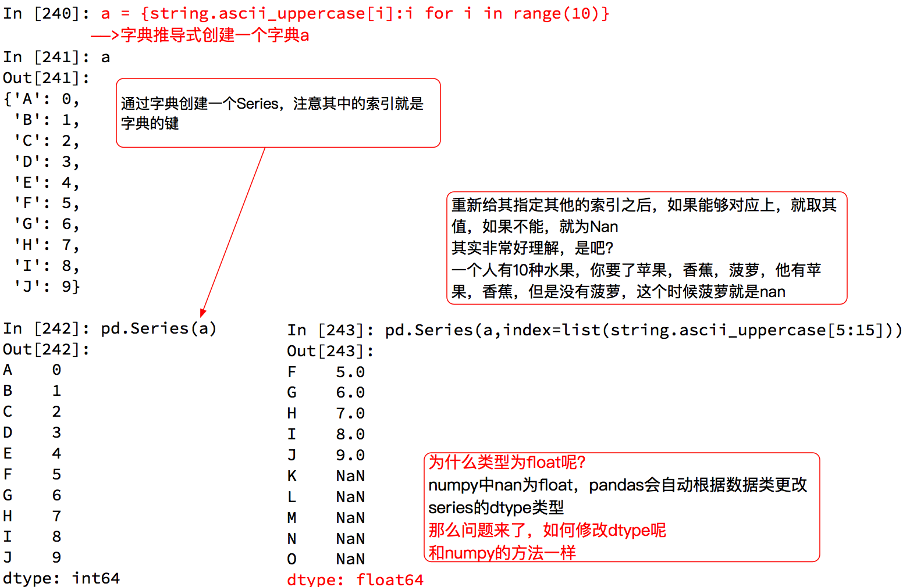 Series切片和索引 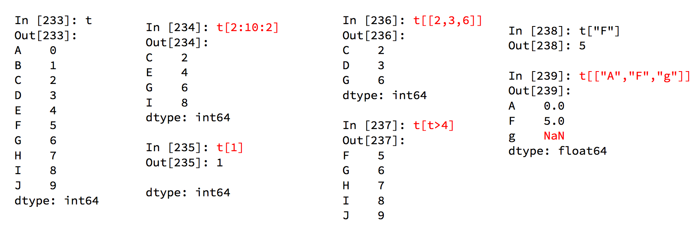
Series的索引和值
对于一个陌生的series类型，可以通过t.index获取其索引值 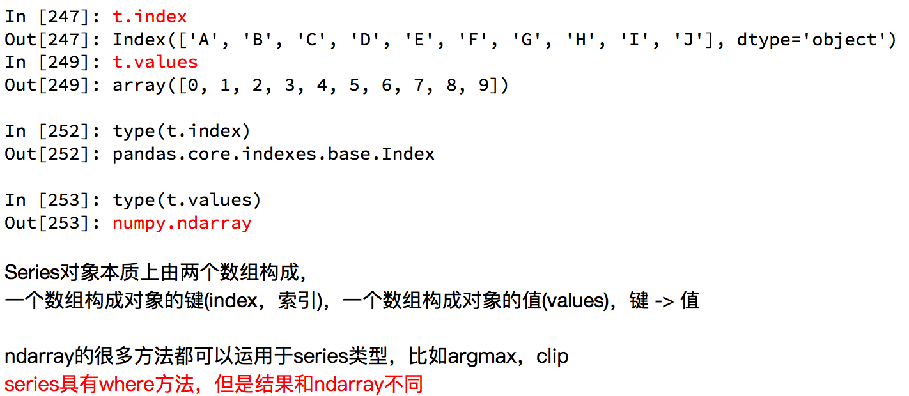
pandas读取外部数据：
- 直接使用
pd. read_csv()即可. - 如果待数据的数据没有列名，则需要补充，即在读取文件时给定参数names的值.
pd.read_csv(“’’,names=column_names)
- column_names：指定类别名字,[‘Sample code number’,‘Clump Thickness’, ‘Uniformity of Cell Size’,‘Uniformity of Cell Shape’,‘Marginal Adhesion’, ‘Single Epithelial Cell Size’,‘Bare Nuclei’,‘Bland Chromatin’,‘Normal Nucleoli’,‘Mitoses’,‘Class’]
- return:数据.
- replace(to_replace=’’,value=)：返回数据.
- dropna():返回数据. 注：读取文件只要是.CSV文件就可以使用load_csv()方法，即使文件地址是网站.
DataFrame 二维，Series容器
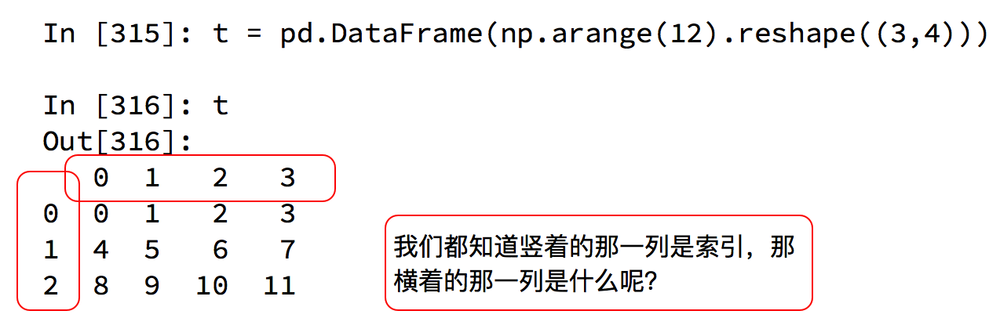
DataFrame对象既有行索引，又有列索引
行索引，表明不同行，横向索引，叫index，0轴，axis=0； 列索引，表名不同列，纵向索引，叫columns，1轴，axis=1． 和一个ndarray一样，通过ndim，shape，dtype了解这个ndarray的基本信息． 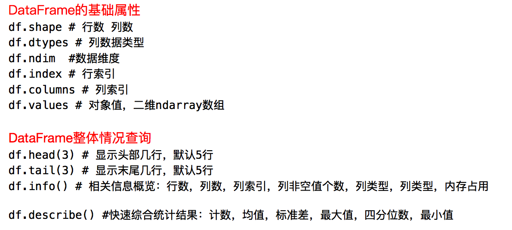 获得使用次数最高的前几个名字是什么？
import pandas as pd
df = pd.read_csv("./dogNames.csv")
# print(df.head())
# print(df.info())
# dataFrame 中排序的方法
df = df.sort_values("Count_AnimalName",ascending=False)
print(df.head())
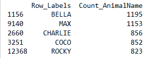
def sort_values(self, by, axis=0, ascending=True, inplace=False, kind='quicksort',
na_position='last')
# ascending：升序：True
# 降序：False
问题：数据有10列，我想按照其中的第1，第3，第8列排序？
# pandas取行或者列的注意点
# - 方括号写数组,表示取行,对行进行操作
# - 写字符串,表示的去列索引,对列进行操作
print(df[:20])
print(df["Row_Labels"])
print(type(df["Row_Labels"]))
还有更多的经过pandas优化过的选择方式：
df.loc通过标签索引行数据（行列的名字）
df.loc[“a”,”w”] # a行w列
df.loc[“a”,:] # a行
df.loc[:,”w”] # w列
df.loc[[“a”,”c”],:] # a，c行
df.loc[:,[“w”,”z”]] # w，z列
df.loc[[“a”,”c” ,[“w”,”z”]] # a,c行，w,z列
df.loc[[“a”:”c” ,[“w”,”z”]] # a到c行，w,z列
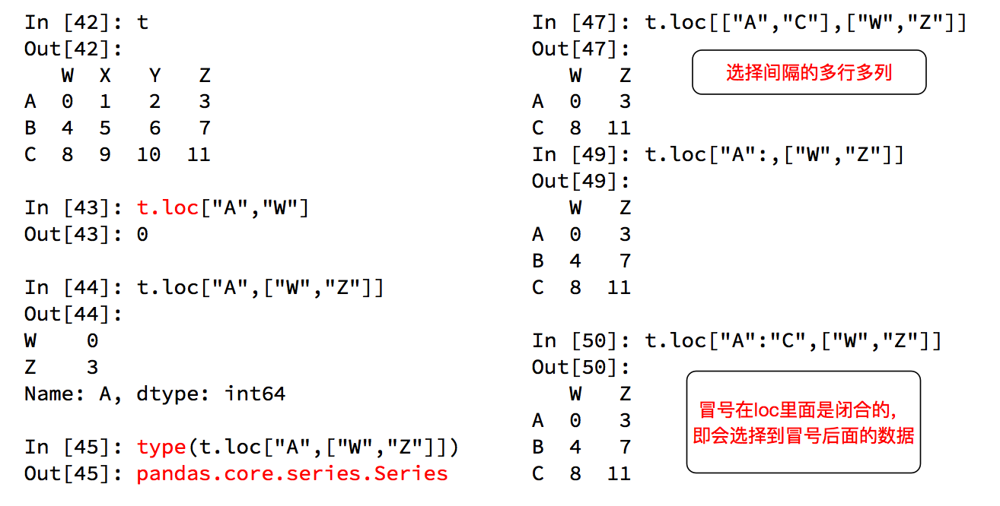
df.iloc通过位置获取行数据（行列号-1）
df.iloc[1,:] # 第二行
df.iloc[:,2] # 第三列
df.iloc[:,[2,1]] # 第三列第二列
df.iloc[[0,2], [2,1]] # 第1,3行, 第3,2列
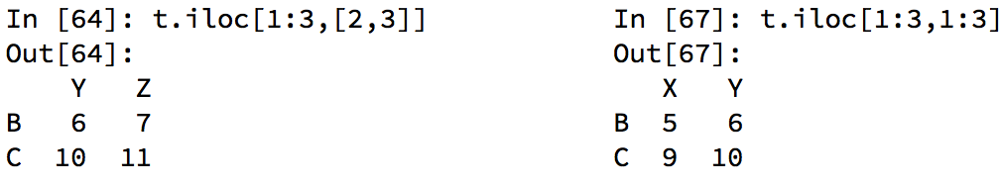 赋值更改数据的过程： 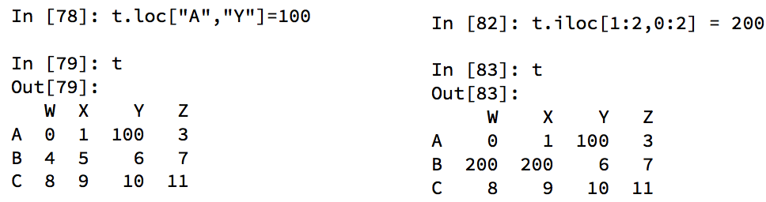
布尔索引
找到所有的使用次数超过800的狗的名字. 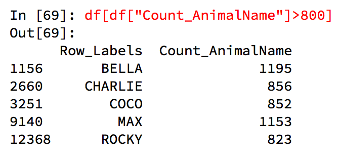 找到所有的使用次数超过700并且名字的字符串的长度大于4的狗的名字 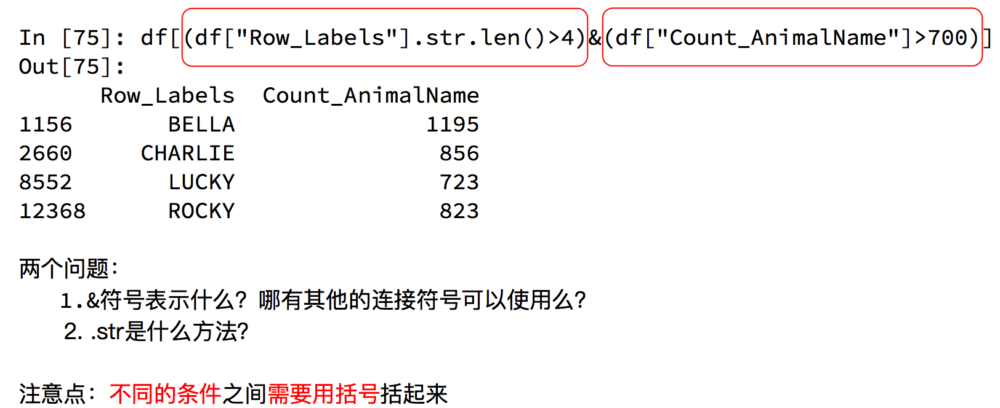
字符串方法
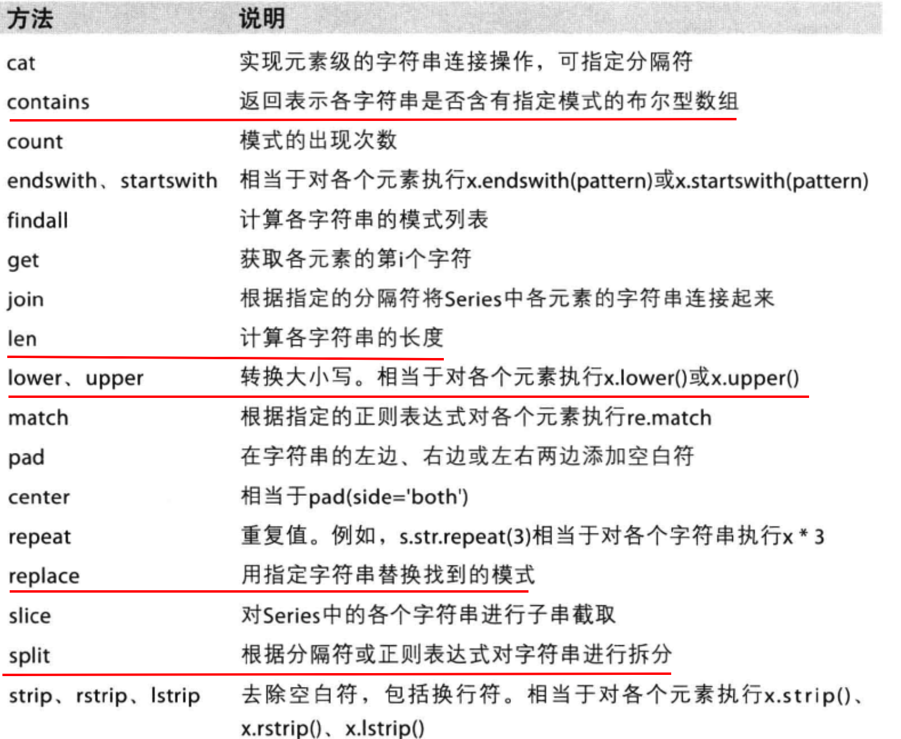
Pandas缺失数据的处理
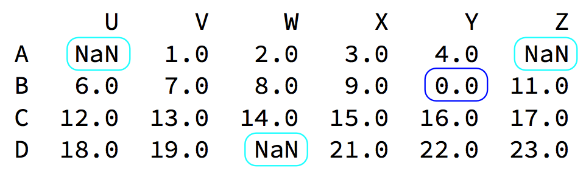
数据缺失通常有两种情况：
一种就是空，None等，在pandas是NaN(和np.nan一样);另一种是我们让其为0，蓝色框中对于NaN的数据，在numpy中我们是如何处理的？
在pandas中我们处理起来非常容易.
判断数据是否为NaN：pd.isnull(df),pd.notnull(df)
- 处理方式1：删除NaN所在的行列dropna (axis=0, how=‘any’, inplace=False)# 是否原地修改
- 处理方式2：填充数据，t.fillna(t.mean()),t.fiallna(t.median()),t.fillna(0)
- 处理为0的数据：
t[t==0]=np.nan
当然并不是每次为0的数据都需要处理计算平均值等情况，nan是不参与计算的，但0会.
数据变形：
- 处理重复数据
- 判断数据是否重复，
duplicated() - 去除重复数据，
drop_dumplicates()，可指定列及如何保留数据
- 判断数据是否重复，
- 使用函数或map转化数据，通常根据字典进行数据转化
data = pd.DataFrame({'food': ['bacon', 'pulled pork', 'bacon', 'Pastrami', 'corned beef',
'Bacon', 'pastrami', 'honey ham', 'nova lox'],
'ounces': [4, 3, 12, 6, 7.5, 8, 3, 5, 6]})
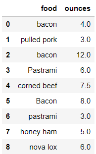
# 添加一列，用于指定食物的来源
meat_to_animal = {
'bacon': 'pig',
'pulled pork': 'pig',
'pastrami': 'cow',
'corned beef': 'cow',
'honey ham': 'pig',
'nova lox': 'salmon'
}
# 使用map()
lowercased = data['food'].str.lower()
data['animal'] = lowercased.map(meat_to_animal)
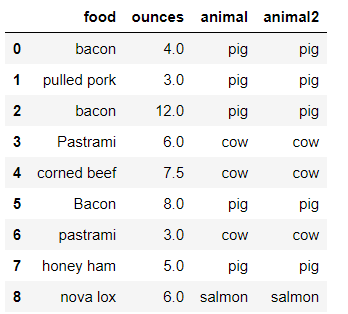
- 替换值，
replace() - 离散化和分享操作，
pd.cut()，返回Categorical对象 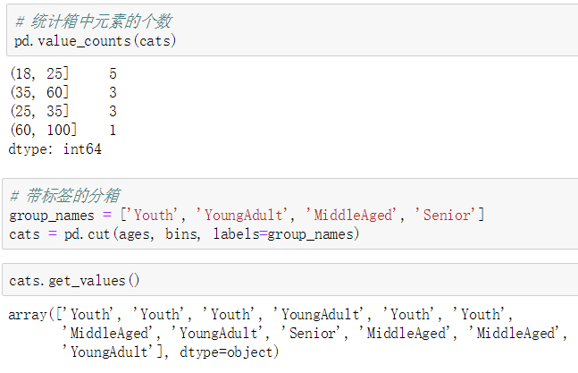
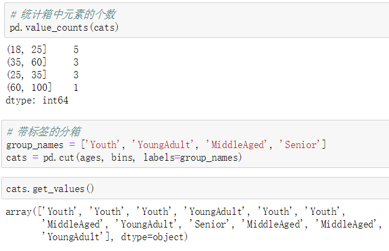 - 哑变量操作，
pd.get_dummies() - 向量化字符串操作
- 字符串列越苏中是否包含子字符串，
ser_obj.str.contains() - 字符串列切片操作，
ser_obj.str[a:b]
- 字符串列越苏中是否包含子字符串，
Xin态好先生
机会是给有准备的人的.